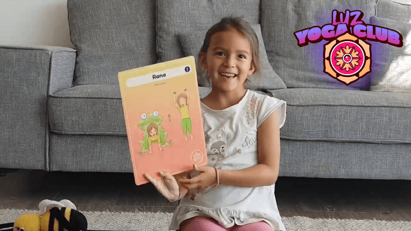

Hoy día Luz ha querido compartir con ustedes una postura de yoga que a ella le encanta y de seguro a sus niños y niñas también.
☆
Es la manera que como niña ha encontrado, para compartir algunas de las cosas que son importantes para ella, con otros pequeños en estos días en que debemos quedarnos en casa 🥰🌱
☆
Algunos de los beneficios de la postura de la rana o malasana son 🐸:
- Ayuda a tonificar y dar flexibilidad de toda la musculatura y tendones de las piernas.
- Fortalece los músculos de la espalda y el abdomen.
- Ayuda a los procesos digestivos y de eliminación.
- Aumenta la movilidad en las caderas.
